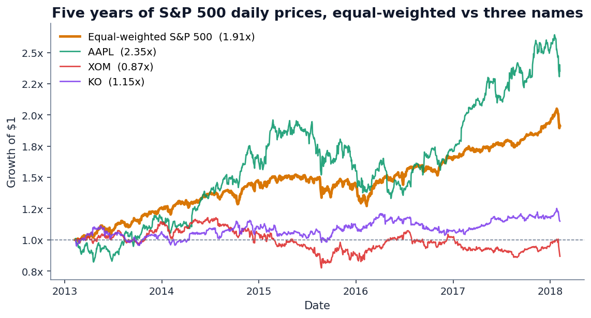
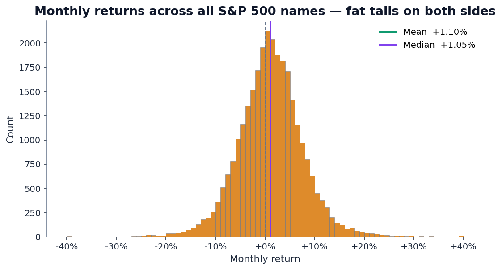
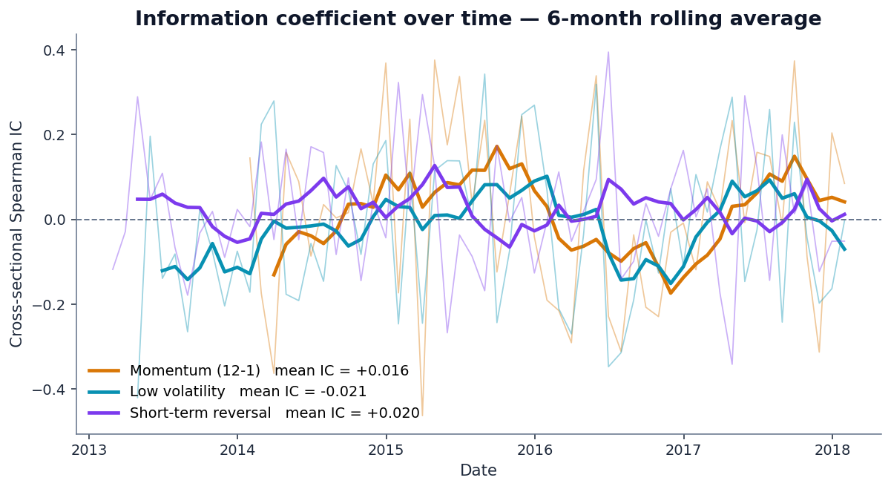
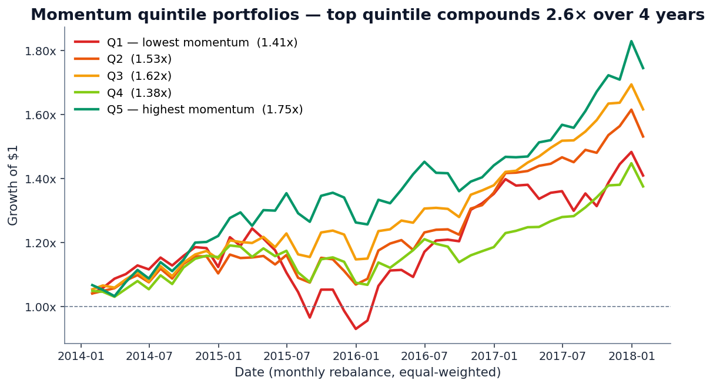
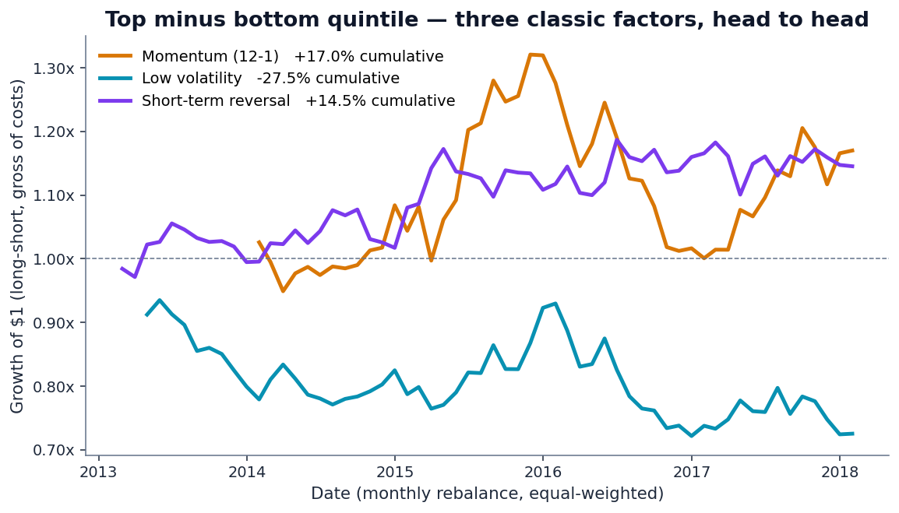
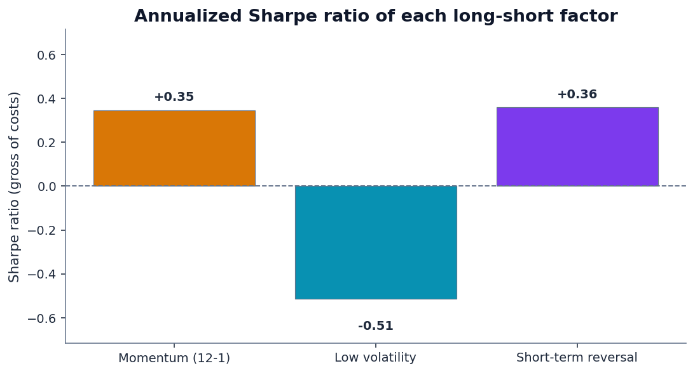
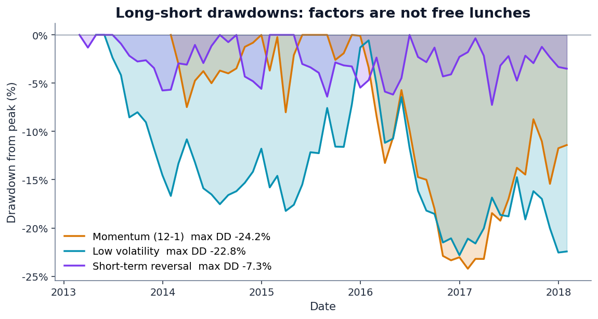
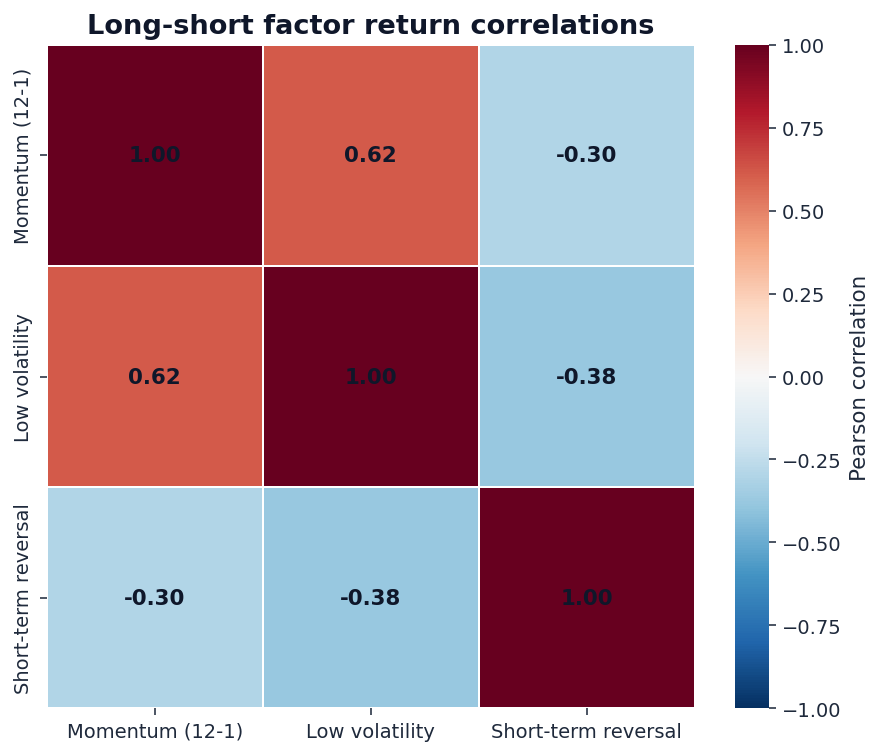

The previous three posts in this series — on credit risk, loan defaults, and credit card fraud — were all about classification on binary outcomes. They were also explicitly setting up a different kind of test: can we apply the same evidence-first discipline to equity scoring, which is QScoring's actual job?
This post answers that question on real data. We pulled the camnugent/sandp500 Kaggle dataset — 619,040 daily price rows across all 505 S&P 500 constituents from February 2013 to February 2018 — and ran a clean cross-sectional factor test on the 474 names with full price history.
Three price-based factors. Five years of data. Monthly cross-sectional ranks. Long-short quintile portfolios. Information coefficients with t-statistics. All gross of costs and computed without look-ahead. The results are not as clean as the academic literature suggests.
1. What we're testing and how
With price-only data we can't compute true fundamental-value factors like price-to-earnings or price-to-book — those require financial-statement data the Kaggle file doesn't carry. What we can compute, cleanly and without ambiguity, are the three classic price-based factors:
- Momentum (12-1) — the trailing 12 months of return, excluding the most recent month. This is the canonical Jegadeesh–Titman construction from 1993, folded into Carhart's four-factor model in 1997 as the WML (winners-minus-losers) factor.
- Low volatility — the trailing 60-day realized volatility of daily returns, with sign flipped so high score = low vol. The low-vol anomaly was popularized by Frazzini and Pedersen's 2014 paper “Betting Against Beta.”
- Short-term reversal — the prior-month return, sign-flipped (losers ranked highest). De Bondt and Thaler 1985 and its modern monthly version. The behavioral story is that short-term moves overshoot and then mean-revert.
For each factor and each month t:
- Compute the factor score using data through month
t(no peeking att+1). - Compute the cross-sectional Information Coefficient — Spearman rank correlation between factor at
tand forward 1-month return att+1. IC is the equity-research equivalent of PR-AUC in classification: it measures rank quality where you actually operate. - Sort the cross-section into 5 equal-weighted quintile portfolios. Hold for one month. Repeat.
- Compute the long-short portfolio: top quintile minus bottom quintile.
2. The market backdrop
Before looking at factors, it helps to know what the market did:

The monthly-return cross-section is also worth eyeballing:

3. Information coefficients — the headline metric
The IC time series for the three factors:

Read those numbers carefully. Two factors (momentum, short-term reversal) had IC of the expected sign — positive — but the magnitudes are small and the variability across months is huge. The third factor (low volatility) had IC of the wrong sign: high-vol stocks outperformed low-vol stocks in this period, on average.
That last finding isn't a coding bug. It's a well-documented feature of the 2013–2018 environment: in a zero-interest-rate, QE-driven bull market, high-beta and high-growth names dominated. The low-volatility anomaly that worked decades earlier was structurally fighting the regime.
4. Quintile portfolios — momentum is the most well-behaved
IC summarizes the rank correlation. Quintile portfolios show what actually happens when you act on that ranking. Here's momentum:

That said: a 33pp spread over 4+ years is not a lot. The equal-weighted S&P 500 returned 91% over the same window. The quintile spread is just over a third of the broad market's total return.
5. Long-short returns — the operational view
A long-short portfolio buys the top quintile and shorts the bottom quintile. It's the cleanest test of whether the factor carries real signal, because it strips out the market beta — what's left is pure factor return.

Headline summary in a table:
| Factor | Mean IC | IC t-stat | Ann. return | Ann. Sharpe | Max drawdown |
|---|---|---|---|---|---|
| Momentum (12-1) | +0.016 | +0.53 | +3.9% | 0.35 | −24.2% |
| Short-term reversal | +0.019 | +1.04 | +2.8% | 0.36 | −7.3% |
| Low volatility | −0.020 | −0.82 | −6.4% | −0.51 | −22.8% |
Two observations:
- Sharpe ratios are modest at best. The single-factor Sharpe of 0.35 on momentum is well below what you'd need to fund a fund — typical institutional targets are above 1.0 net of costs.
- Short-term reversal had the cleanest risk profile by a wide margin — max drawdown of just 7.3% vs 22–24% for the other two. The cumulative return was small, but the path was smooth.

6. Drawdowns — factors are not free lunches

If you ran any of these as a standalone strategy with real capital, you'd need the discipline to hold through a 20%+ drawdown without changing your mind. Most investors can't. This is the soft constraint that makes factor investing harder in practice than in backtests.
7. Are the factors independent?
Combining factors into a composite score only makes sense if they carry distinct information. The correlation matrix:

If you naively averaged the three factor signals into a composite score on 2013–2018, you'd effectively be double-weighting “don't buy high-vol names” (the shared bet between momentum and low-vol) and only partially-cancelling that with the reversal signal. Composite scoring requires factor de-correlation, not just factor averaging.
8. The honest conclusions
Five years of S&P 500 data is not enough to confidently say a factor “works” or “doesn't.”
The decades-long academic record on momentum is robust — but that record is built on ~100 years of data spanning multiple regimes. On any individual 5-year window, momentum can be flat, positive but weak, or even negative (the 2008–2009 momentum crash is famous). Our finding of “positive but not significant” over 2013–2018 is consistent with the long-run literature, not in conflict with it.
The low-volatility anomaly is structurally regime-dependent. It works when expensive low-vol stocks beat cheap high-vol ones — typically in slow-growth, risk-off environments. The 2013–2018 window was the opposite environment, and the anomaly inverted. The right read isn't “low-vol is dead” — it's “low-vol has macro-regime exposure that long-term backtests average out.”
Short-term reversal had a clean low-drawdown profile but only +2.8% annualized gross. Subtract realistic transaction costs (5–15 bps per month at high monthly turnover) and the return is plausibly negative net of costs.
9. What QScoring does about this
This post is, in a sense, the empirical justification for several specific choices in the QScoring methodology:
- We don't rely on a single 5-year backtest. Factor validation uses the longest history we can construct per metric — typically decades — and we publish IC and quintile-spread numbers on the methodology page so users can see what the long-run evidence actually says, not just the in-sample fit.
- We use five factor categories, not one. Value, growth, momentum, profitability, and risk. The factors are deliberately chosen for their long-run academic record and low pairwise correlation, so the composite isn't accidentally double-betting on the same underlying risk.
- We sector-normalize. A “cheap” software company isn't cheap the same way a “cheap” bank is. Every factor is z-scored against the stock's sector before being combined into the composite. This addresses one of the silent reasons naive factor backtests look worse than they should.
- We disclose the operational metric, not the vanity metric. Top-decile vs bottom-decile spread, annualized, against forward returns. That's the equity equivalent of the precision-at-top-K metric we argued for in our fraud detection post. R² and headline IC are sanity checks; the spread is what would have made or lost money.
The factor zoo problem in equity research — Cochrane's “hundreds of significant factors discovered” — is the same overfitting problem we warned about in the loan-default post. The honest fix is the same one: small, vetted feature set with a real empirical record, evaluated on the operational metric that actually matters.
See real factor analysis applied to every U.S. stock.
QScoring rates every U.S.-listed equity using the same evidence-first discipline you just read about — long-run factor validation, sector-normalized scoring, transparent IC and quintile-spread metrics. No black boxes.
Open a free account →